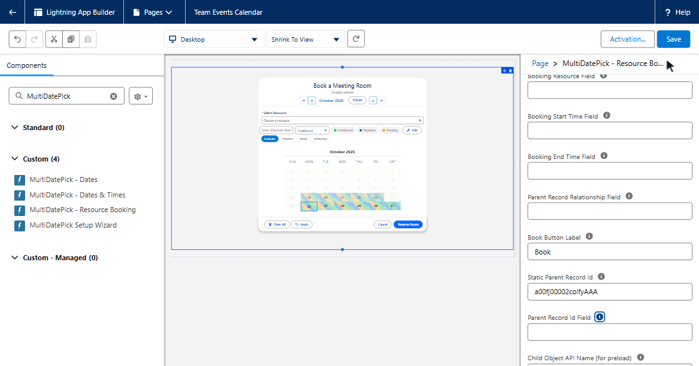

Getting Started with MultiDatePick for Salesforce
Install, build a config in the Setup Wizard, and put the calendar on a Lightning page or in a Screen Flow.
Which MultiDatePick component do I need?
Start with the simplest one that fits. All three ship in the one package, every feature included.


| What you need | Date | Date Time | Booking |
|---|---|---|---|
| Many dates, ranges, recurring patterns | ✓ | ✓ | ✓ |
| Status colors, hover details, edit mode | ✓ | ✓ | ✓ |
| Time slot grid and conflict detection | - | ✓ | ✓ |
| Resources, availability, capacity, business hours | - | - | ✓ |
1Install MultiDatePick from AppExchange
One managed package: the three components, the Setup Wizard and the Flow actions.
| Install | On the AppExchange listing (at launch), click Get It Now. Install for admins only, all users, or specific profiles. |
| Check it | Setup, Installed Packages lists MultiDatePick. In Lightning App Builder or Flow Builder, search MultiDatePick to see Dates, Dates & Times and Resource Booking. |
| Learn it | The package ships guided flows: Intro to MultiDatePick, plus a Deep Dive flow each for Dates, Date Time and Booking. Start them from the Setup Wizard. |
2Assign the MultiDatePick permission sets
Installing grants no one access. Assign one of these in Setup, Permission Sets.
| Permission set | Give it to |
|---|---|
| MultiDatePick - Setup | The one or two admins who build configs. Includes the Setup Wizard. |
| MultiDatePick - User | Everyone who uses the calendars. No wizard. |
| MultiDatePick - All Access | Admins who build and use them. |
Your objects are separate. Users also need read and create access to the objects and fields your config uses. If something is missing, the calendar names the exact field or object.
3Build a config in the Salesforce Setup Wizard
Open MultiDatePick Setup Wizard from the App Launcher. Four steps; it fills in the fields it can work out, and the live preview shows the calendar before you save.

- Where it lives
- Shape
- Jump start
- Review
Saved configs are reusable. The config name is all a page or Flow needs. On the Existing Configurations tab, Clone a config to make a variation or Export it as JSON for another org.
Or import a ready-made config from the Config Library
Click Copy for Setup Wizard on a card in the Config Library, paste it into the wizard's Import tab, and deploy.

- Copy for Setup Wizard
- Import tab
- Map your fields
- Deploy
Different object names in your org? Smart Field Mapping lists each object or field the JSON names that your org lacks, with a dropdown of yours. Pick, then Apply & Deploy. If everything matches, the step is skipped.
4Add a calendar to a Salesforce record page
In Lightning App Builder, drag the MultiDatePick component onto the page, type your Config Name, and save. The import demo above ends on exactly this.
| Page | What you set |
|---|---|
| Record page | Config Name. The page record is the parent automatically. |
| App, Home and Experience pages | Config Name plus Static Parent Record Id: the record the dates belong to. |
Load Existing Dates shows dates already saved. Saving only adds records; it never deletes existing ones.
App, Home and Experience pages: set Static Parent Record Id
These pages have no record of their own, so tell the component which record to save against.

Full walkthrough and use cases: App, Home and Experience pages.
5Add MultiDatePick to a Screen Flow
In Flow Builder, open a Screen, search MultiDatePick, drag the component on, and set Config Name.

Checkboxes come from the config. With Config Name set, you never touch a checkbox in Flow Builder. The flow-only ones (Required, Show Inline, Output Date Ranges as JSON) stay off unless you turn them on.
What the flow gets back
| Component | Use |
|---|---|
| Booking | Saves its own records. Read bookingSuccessCount and bookingConflictDates. |
| Date | selectedDates, or selectedDateRangesJson for ranges. |
| Date Time | selectedDatesWithTimesJson. |
To create records from JSON, add the Parse Date Entries from JSON action, loop its output, and create one record per entry. All clicks. Every detail is on the Flow Cheat Sheet.

Stuck on the first run?
The four things new setups hit most. Each has the full fix on the Troubleshooting page.
| You see | Fix |
|---|---|
| No Save button | Set Static Parent Record Id. Details |
| Flow ignores my wizard settings | Spell Config Name exactly as the wizard saved it. Details |
| Booking says "Configuration Required" | Set Config Name to a Booking config. Details |
| Red "couldn't load its data" banner | Read the gray box: it names the field or access. Details |
Setup questions
Short answers to what admins ask first.
Do I need Apex or a developer to set up MultiDatePick?
No. You install the package, build a config in the Setup Wizard by picking objects and fields from dropdowns, and drop the component on a page or a Flow screen. No Apex required.
Which MultiDatePick permission set should I assign?
MultiDatePick - Setup for the admins who build configs, MultiDatePick - User for everyone who only uses the calendars, and MultiDatePick - All Access for admins who do both. Users also need access to your own objects and fields.
Why is there no Save button on my App Page or Home Page calendar?
App, Home and Experience pages have no record of their own. Set Static Parent Record Id to the record the dates belong to and the Save button appears.
Do I have to set every checkbox in Flow Builder?
No. Set Config Name to the config you saved in the Setup Wizard and every checkbox setting comes from the config. Only if you skip Config Name and set properties by hand do you set the checkboxes yourself.
Can I move a MultiDatePick config to another Salesforce org?
Yes. Export it from the Existing Configurations tab, then paste the JSON into the Import tab in the other org. Smart Field Mapping lets you match any object or field names that differ.
Next steps
Go deeper on whatever you are building.
Need help getting set up?
Setup question, feature request, or not sure which component fits? Reach out.